wf4ni to Compute Tractographyvignettes/tractography.Rmd
tractography.RmdIn this vignette, we’re going to develop a pipeline (workflow) to build the deterministic tractography from a diffusion image, using the wf4ni package.
The main steps in this pipeline will be:
To demonstrate the flexibility of wf4ni, we’ll use different R packages to perform several of the above steps.
It must be noted that the philosophy of wf4ni is to separate the pipeline logic from its implementation. So, the same workflow could be used just changing, if needed, the implementation of any (or all) of the steps above.
The organization of this vignette is as follows. First, we’ll describe the dependencies or packages needed to run the workflow. Later, we’ll describe the workflow, step by step, without presenting the actual implementation of the functions used. Then, we’ll use some sample data to run an experiment with the workflow, presenting its results. We’ll end the vignette with an annex in which we’ll present the actual implementation of the functions.
We consider two types of requirements: packages needed to perform the key steps in the workflow and data which may be necessary at any step of the computation.
First, to build the flow, the wf4ni package is needed:
library(wf4ni)
#>
#> Attaching package: 'wf4ni'
#> The following object is masked from 'package:base':
#>
#> mergeThe following packages are needed in some points of the pipeline:
fslr and dti will be used for the processing, while neurobase, oro.nifti and readr will be used for reading and writing files. The tidyverse is useful to simplify some code and make it more legible.
The diffusion workflow will be a NIflow object. To create such object, one needs to provide a name, a work_dir where to store temporary results, and the name of the inputs needed to execute the workflow. In this case, our pipeline will need:
The first step will be to correct the effect of eddy currents in the diffusion acquisition. We’ll use the fslr package to this end.
This function is added to the flow a follows:
And a graph representation of this partial flow:
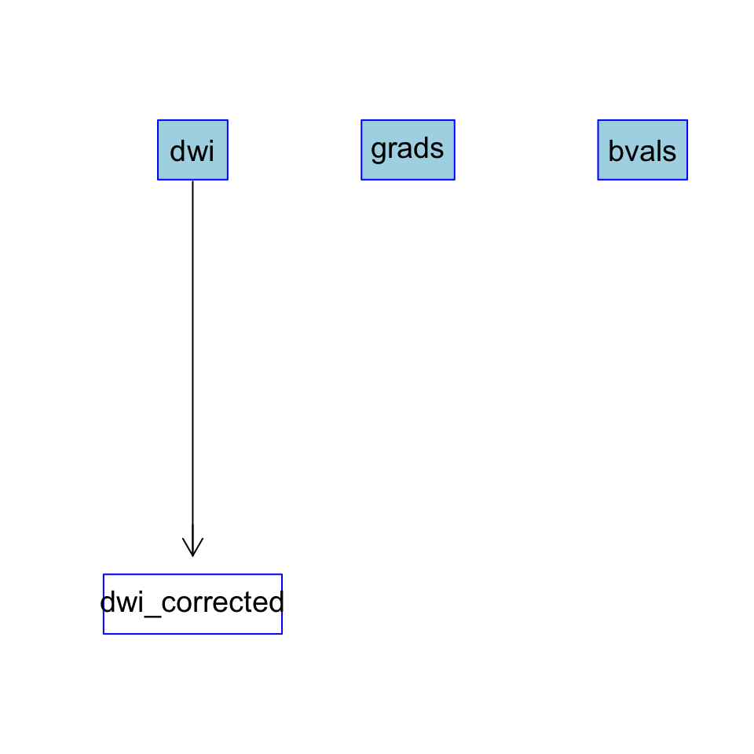
The next step is to incorporate the gradient directions and the b-values in an object suitable to perform the tensor computation by the dti package.
And the way to include these functions in the flow is:
dti_flow %>%
add(what = read_data,
inputs = c("dwi_corrected", "grads", "bvals"),
output = "dwiData") %>%
add(what = compute_tensors,
inputs = "dwiData",
output = "tensors")The partial flow is:
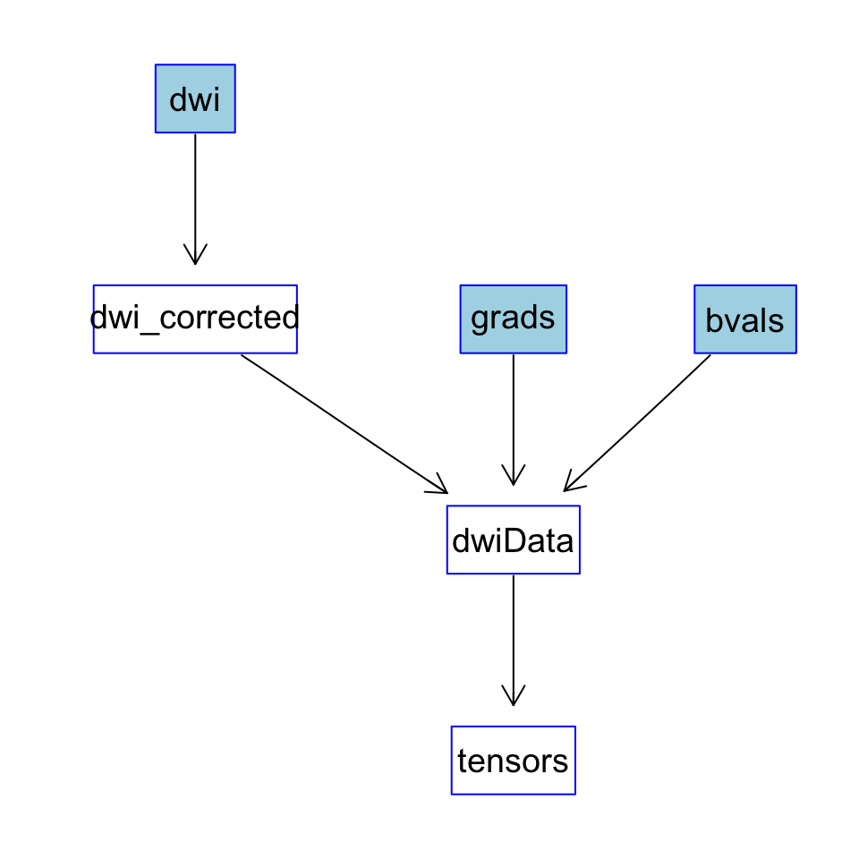
Using tensor information, we can extract the S0 image (the average of the images acquired without gradient) and the mask (using the fslr package):
Next, we add these steps to the flow:
dti_flow %>%
add(what = get_S0,
inputs = "tensors",
output = "S0") %>%
add(what = compute_mask,
inputs = "S0",
output = "mask")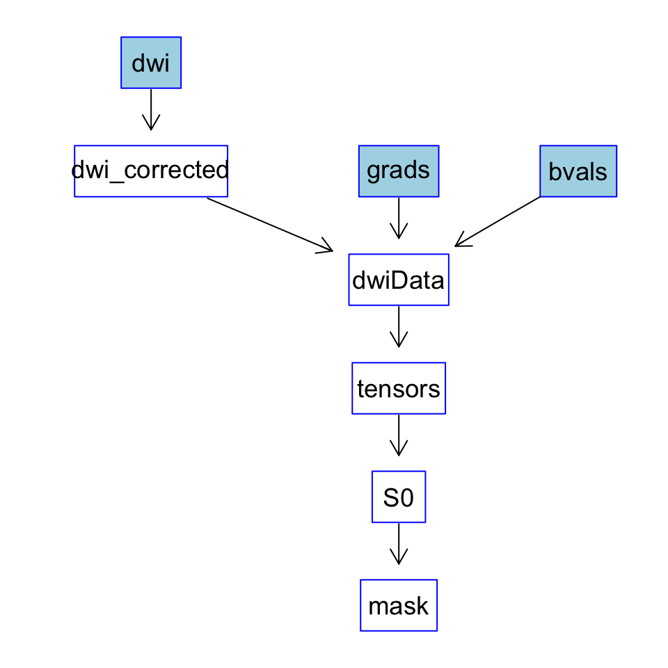
One of the main results of this pipeline is to obtain the fibers associated to the tensors previously computed. We use the following function (a wrapper to a function in the dti package) to perform fiber tracking on the mask already calculated.
And we add this step to the flow:
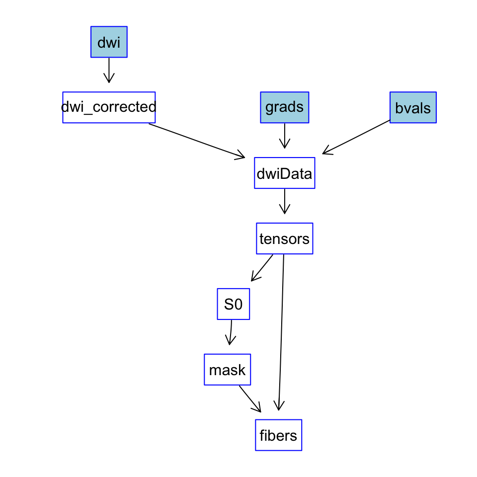
With these final additions, the complete pipeline is as follows:
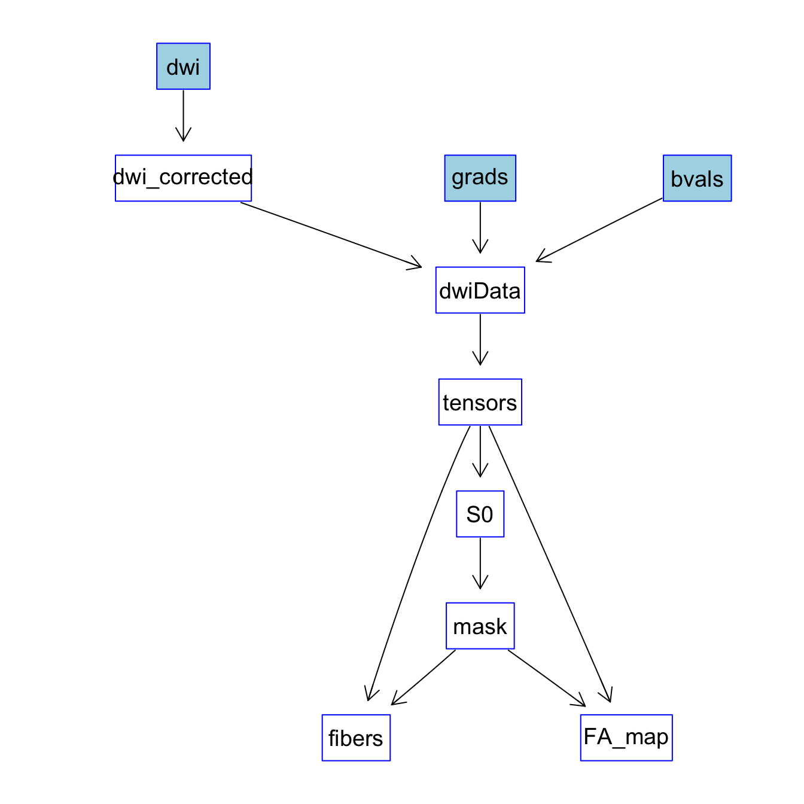
We can also obtain a brief summary of the flow by typing:
summary(dti_flow)
#> NIflow object with:
#> name: dti
#> inputs: dwi, grads, bvals
#> outputs: dwi_corrected, dwiData, tensors, S0, mask, fibers, FA_map
#> Currently using 744.82 kB of memory.
#> Summary of processes:
#> dwi_corrected needs dwi as inputs.
#> dwiData needs dwi_corrected, grads, bvals as inputs.
#> tensors needs dwiData as inputs.
#> S0 needs tensors as inputs.
#> mask needs S0 as inputs.
#> fibers needs tensors, mask as inputs.
#> FA_map needs tensors, mask as inputs.To illustrate how this workflow can be used, let us suppose that we have all the functions mentioned before already implemented (an example implementation is given in the Annex), and build the workflow as in the previous steps. We’ll apply this flow to compute the fibers and the FA map given a DWI image.
We’ll use sample data for the DWI image (from the Human Connectome Project), and the b-values vector and gradient matrix.
dwi_file <- "./resources/dti/dti_example.nii.gz"
bvals_file <- "./resources/dti/dti_bvals.csv"
grads_file <- "./resources/dti/dti_gradients.csv"
dwi <- readnii(dwi_file)
bvals <- read_csv(bvals_file,
col_names = FALSE,
col_types = cols()) %>% unlist()
gradients <- read_csv(grads_file,
col_names = FALSE,
col_types = cols()) %>%
as.matrix()
res <- dti_flow$execute(inputs = list(dwi = dwi,
grads = gradients,
bvals = bvals),
desired_outputs = c("S0",
"fibers",
"FA_map"))Using the function ortho2 in package neurobase, we can inspect both the S0 image and the obtained FA map.
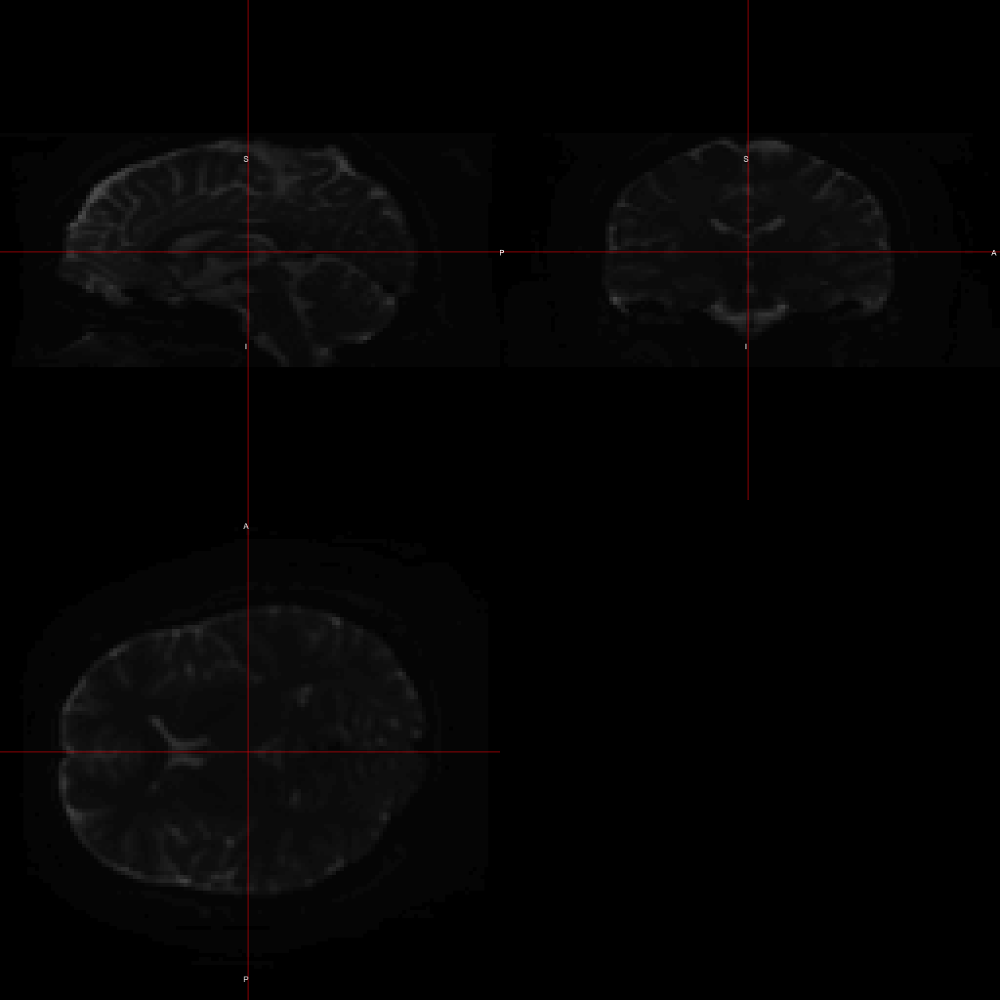
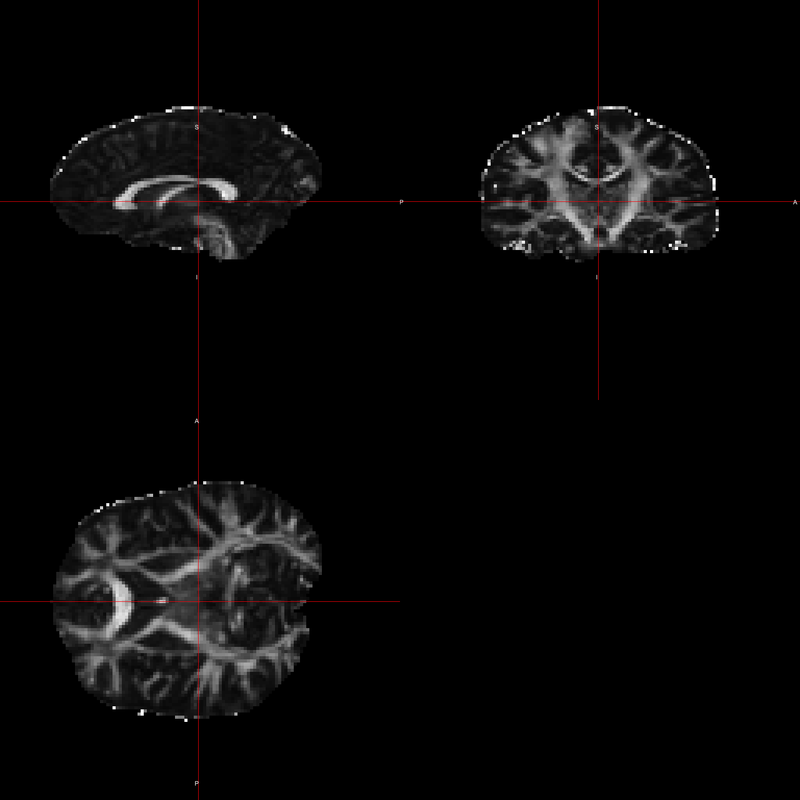
Also, we can inspect the computed fiber bundles by using the native function show3d of package dti. To illustrate the results, we present some snapshots of the obtained fibers:
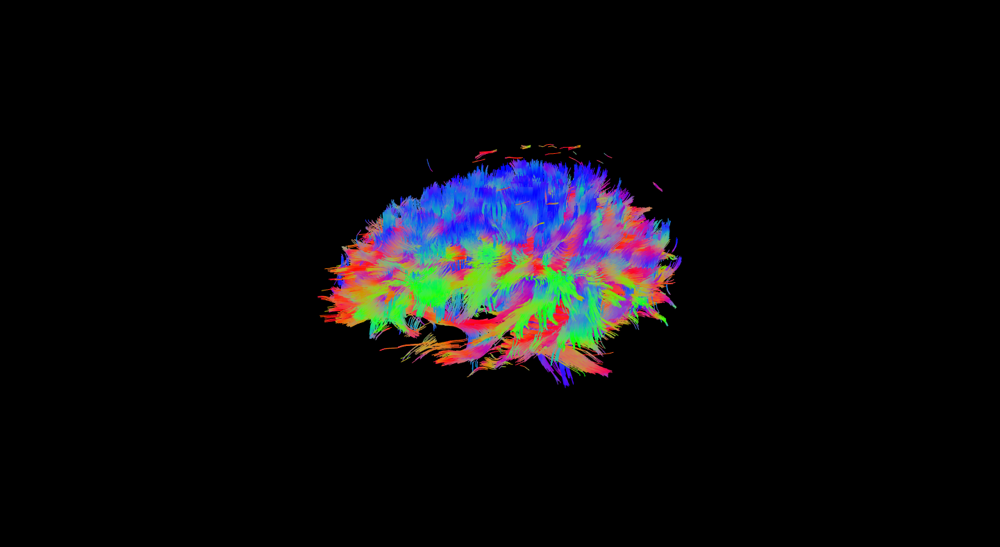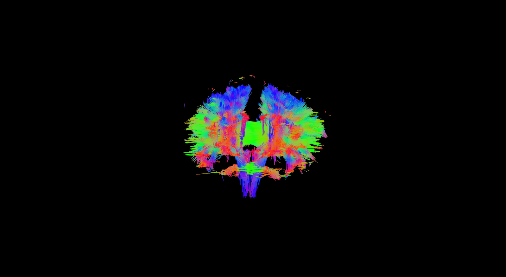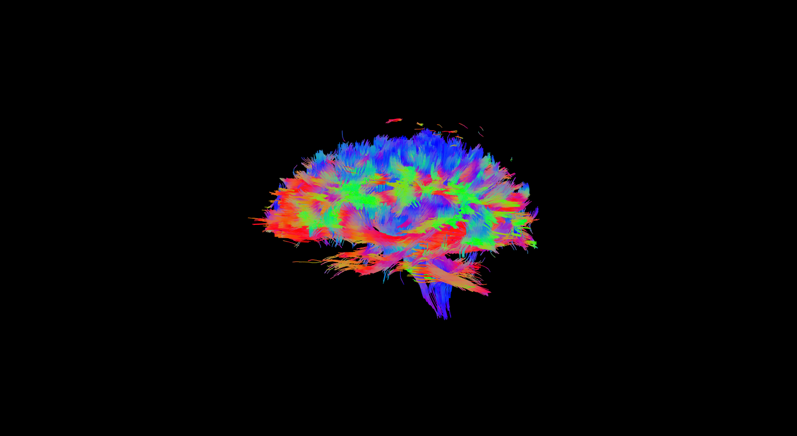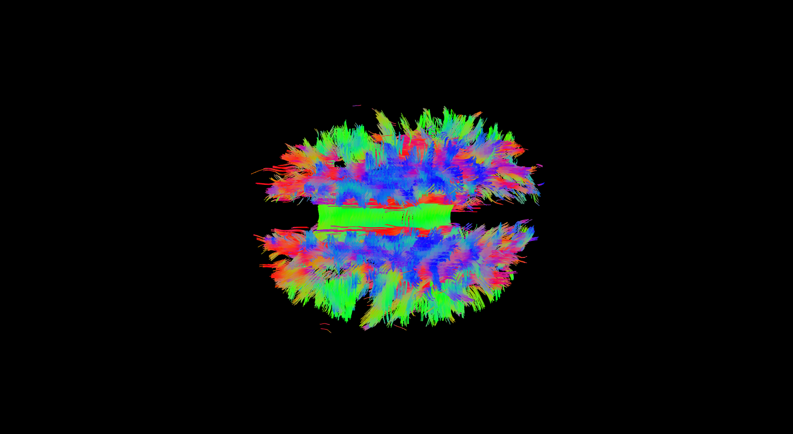
The NIflow object stores internally a log of all the processes that it goes through and the memory used to store its internal results:
#> (2019-04-28 21:07:14) [DEBUG] Adding process with inputs: dwi and output(s): dwi_corrected
#> (2019-04-28 21:07:17) [DEBUG] Adding process with inputs: dwi_corrected, grads, bvals and output(s): dwiData
#> (2019-04-28 21:07:17) [DEBUG] Adding process with inputs: dwiData and output(s): tensors
#> (2019-04-28 21:07:18) [DEBUG] Adding process with inputs: tensors and output(s): S0
#> (2019-04-28 21:07:18) [DEBUG] Adding process with inputs: S0 and output(s): mask
#> (2019-04-28 21:07:19) [DEBUG] Adding process with inputs: tensors, mask and output(s): fibers
#> (2019-04-28 21:07:20) [DEBUG] Adding process with inputs: tensors, mask and output(s): FA_map
#> (2019-04-28 21:08:36) [DEBUG] Using provided input dwi
#> (2019-04-28 21:08:36) [DEBUG] Using provided input grads
#> (2019-04-28 21:08:36) [DEBUG] Using provided input bvals
#> (2019-04-28 21:08:36) [DEBUG] Memory used at init: 259.54 MB
#> (2019-04-28 21:08:36) [DEBUG] Switching tempdir to: ~/flow/dti
#> (2019-04-28 21:08:36) [DEBUG] Computing dwi_corrected...
#> (2019-04-28 21:17:02) [DEBUG] Memory used after computation: 519.07 MB
#> (2019-04-28 21:17:39) [DEBUG] Removed intermediate outputs: dwi
#> (2019-04-28 21:17:40) [DEBUG] Memory used after cleanup: 259.54 MB
#> (2019-04-28 21:17:40) [DEBUG] Computing dwiData...
#> (2019-04-28 21:18:41) [DEBUG] Memory used after computation: 519.08 MB
#> (2019-04-28 21:19:12) [DEBUG] Removed intermediate outputs: grads, bvals, dwi_corrected
#> (2019-04-28 21:19:12) [DEBUG] Memory used after cleanup: 259.54 MB
#> (2019-04-28 21:19:12) [DEBUG] Computing tensors...
#> (2019-04-28 21:21:37) [DEBUG] Memory used after computation: 328.15 MB
#> (2019-04-28 21:21:40) [DEBUG] Removed intermediate outputs: dwiData
#> (2019-04-28 21:21:40) [DEBUG] Memory used after cleanup: 68.61 MB
#> (2019-04-28 21:21:40) [DEBUG] Computing S0...
#> (2019-04-28 21:21:40) [DEBUG] Memory used after computation: 76.48 MB
#> (2019-04-28 21:21:41) [DEBUG] Computing mask...
#> (2019-04-28 21:21:44) [DEBUG] Memory used after computation: 80.42 MB
#> (2019-04-28 21:21:44) [DEBUG] Computing fibers...
#> (2019-04-28 21:21:51) [DEBUG] Memory used after computation: 117.83 MB
#> (2019-04-28 21:21:53) [DEBUG] Computing FA_map...
#> (2019-04-28 21:21:56) [DEBUG] Memory used after computation: 125.7 MB
#> (2019-04-28 21:21:56) [DEBUG] Removed intermediate outputs: tensors, mask
#> (2019-04-28 21:21:57) [DEBUG] Memory used after cleanup: 53.15 MB
#> (2019-04-28 21:21:57) [DEBUG] Switching to base tempdir
#> (2019-04-28 21:21:57) [DEBUG] Computed all resultsIn this annex, we provide example code for the tractography workflow, which can be loaded and used to replicate the workflow and results given in this vignette.
correct_dwi <- function(image) {
my_dwi_file <- tempimg(as.nifti(image))
dwi_corrected <- eddy_correct(infile = my_dwi_file)
return(dwi_corrected)
}read_data <- function(image, grads, bvals) {
my_dwi_corrected_file <- tempimg(image)
dwi_data <- readDWIdata(gradient = grads,
dirlist = my_dwi_corrected_file,
bvalue = bvals,
format = "NIFTI")
return(dwi_data)
}
compute_tensors <- function(dwi_data) {
tensors <- dtiTensor(dwi_data)
return(tensors)
}get_S0 <- function(tensors) {
return(as.nifti(tensors@th0))
}
compute_mask <- function(S0) {
S0_file <- tempimg(S0)
brain_mask <- fslbet(infile = S0_file)
return(brain_mask > 0)
}